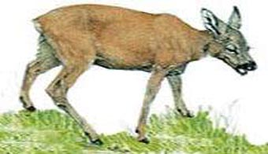

Dahu de Savoie

Fiche de taille
- Hauteur côté gauche
- ≈ 40 cm
- Hauteur côté droit
- ≈ 55 cm
- Poil
- Plus ras que le dahu de Camargue
Ce dessin est en fait celui d'un dahu de Savoie, que j'ai emprunté à un ami, ne sachant pas dessiner moi-même. L'animal fait environ 40 cm de hauteur mesuré côté gauche, et 55 cm côté droit.
Le poil du dahu de Savoie est plus ras que celui de Camargue. Le dessin a été fait en hiver, car en été le dahut grossit (voir la photo ci-après).
Retour